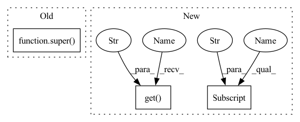

Pattern ID :1907
Before Change
class DQRC(BaseLearning):
def __init__(self, parameters):
super() .__init__(parameters)
self.beta = parameters["beta"]
self.num_actions = parameters["num_actions"]
self.num_features = self.policy_net.h1_sizeAfter Change
self.optimizer = optimizer
// regularization parameter
self.alpha = params["alpha"]
self.epsilon = params["epsilon"]
self.beta = params["beta"]
// secondary weights optimization parameters
self.beta_1 = params.get("beta_1" , 0.99)
self.beta_2 = params.get("beta_2", 0.999)
self.eps = params.get("eps", 1e-8)
// learnable parameters for secondary weightsIn pattern: SUPERPATTERN
Frequency: 3
Non-data size: 3
Instances Fragment ID: 8559834
Project Name: rlai-lab/regularized-gradienttd
Commit Name: 8e6702e9e3d8529be2f276e70a242133381a171c
Time: 2020-07-05
Author: andnpatterson@gmail.com
File Name: TDRC/DQRC.py
M Class Name: DQRC
N Class Name: DQRC
M Method Name: __init__(8)
N Method Name: __init__(2)
M Parent Class:
N Parent Class: BaseLearning
M File Name: TDRC/DQRC.py
N File Name: TDRC/DQRC.py
M Start Line: 7
M End Line: 18
N Start Line: 7
N End Line: 30
Before Change
class DQRC(BaseLearning):
def __init__(self, parameters):
super() .__init__(parameters)
self.beta = parameters["beta"]
self.num_actions = parameters["num_actions"]
self.num_features = self.policy_net.h1_sizeAfter Change
// regularization parameter
self.alpha = params["alpha"]
self.epsilon = params["epsilon"]
self.beta = params["beta"]
// secondary weights optimization parameters
self.beta_1 = params.get("beta_1" , 0.99)
self.beta_2 = params.get("beta_2", 0.999)
self.eps = params.get("eps", 1e-8)
// learnable parameters for secondary weights Fragment ID: 8559835
Project Name: rlai-lab/regularized-gradienttd
Commit Name: 8e6702e9e3d8529be2f276e70a242133381a171c
Time: 2020-07-05
Author: andnpatterson@gmail.com
File Name: TDRC/DQRC.py
M Class Name: DQRC
N Class Name: DQRC
M Method Name: __init__(8)
N Method Name: __init__(2)
M Parent Class:
N Parent Class: BaseLearning
M File Name: TDRC/DQRC.py
N File Name: TDRC/DQRC.py
M Start Line: 7
M End Line: 18
N Start Line: 7
N End Line: 30
Before Change
// we implement this to have more specific type hints
return super() .from_datasets(
dataset, text=text, annotation=annotation, metadata=metadata
)
After Change
if row.get("prediction"):
row["prediction"] = cls._parse_prediction_field(row["prediction"])
if cols_to_be_joined.get("metadata" ) :
row["metadata"] = cls._join_datasets_columns_and_delete(
row, cols_to_be_joined["metadata"]
)
records.append(Text2TextRecord.parse_obj(row))
Fragment ID: 8559839
Project Name: recognai/rubrix
Commit Name: 2b0d6075ec3f4eb2cf2783583dd21d4f4a0d5c4f
Time: 2022-07-08
Author: david@recogn.ai
File Name: src/rubrix/client/datasets.py
M Class Name: DatasetForText2Text
N Class Name: DatasetForText2Text
M Method Name: from_datasets(6)
N Method Name: from_datasets(5)
M Parent Class: DatasetBase
N Parent Class: DatasetBase
M File Name: src/rubrix/client/datasets.py
N File Name: src/rubrix/client/datasets.py
M Start Line: 1036
M End Line: 1038
N Start Line: 951
N End Line: 1001
Before Change
>>> DatasetForTokenClassification.from_datasets(ds)
// we implement this to have more specific type hints
return super() .from_datasets(
dataset, text=text, tokens=tokens, tags=tags, metadata=metadata
)
After Change
if row.get("annotation"):
row["annotation"] = cls.__entities_to_tuple__(row["annotation"])
if cols_to_be_joined.get("metadata" ) :
row["metadata"] = cls._join_datasets_columns_and_delete(
row, cols_to_be_joined["metadata"]
)
records.append(TokenClassificationRecord.parse_obj(row))
Fragment ID: 8559837
Project Name: recognai/rubrix
Commit Name: 2b0d6075ec3f4eb2cf2783583dd21d4f4a0d5c4f
Time: 2022-07-08
Author: david@recogn.ai
File Name: src/rubrix/client/datasets.py
M Class Name: DatasetForTokenClassification
N Class Name: DatasetForTokenClassification
M Method Name: from_datasets(7)
N Method Name: from_datasets(6)
M Parent Class: DatasetBase
N Parent Class: DatasetBase
M File Name: src/rubrix/client/datasets.py
N File Name: src/rubrix/client/datasets.py
M Start Line: 744
M End Line: 746
N Start Line: 688
N End Line: 755